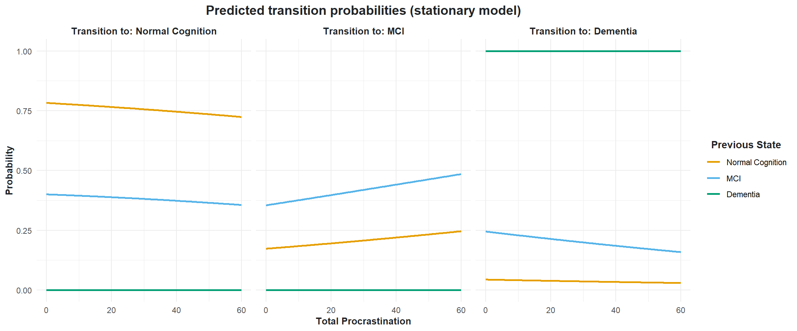
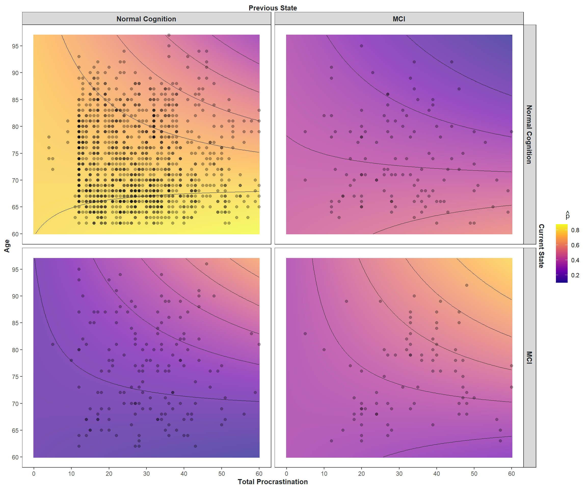
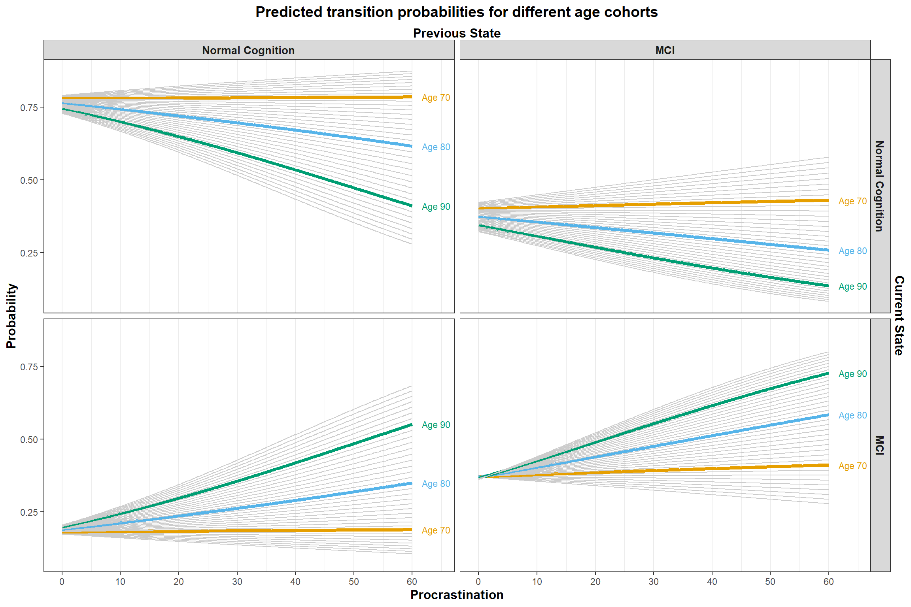

Before preparing the data, we want to create a vector of covariates that we are interested in using in our analysis
cols <-c("ID", "Gender", "Age", "Education_tri",paste0("Total_dep_", seq(2016, 2022, by =2)),"Total_p")
Following this, we can now use the extract_years() function to extract the cognitive function data for the years 2016, 2018, and 2020.
We will also impute some missing values impute = TRUE using logical reasoning (if a respondent has an NA value in 2018, but has a classification of “normal cognition” in 2020, then the missing 2018 value becomes “normal cognition”).
We will also treat dementia as an absorbing state absorbing = TRUE.
data_stack <- data |>extract_years(years =seq(2016, 2022, by =2), impute =TRUE, absorbing =TRUE) |>na.omit()head(data_stack)
# A tibble: 6 × 5
ID cogfunction2016 cogfunction2018 cogfunction2020 cogfunction2022
<int> <chr> <chr> <chr> <chr>
1 1 Normal Cognition Normal Cognition Normal Cognition Normal Cognition
2 2 Normal Cognition Normal Cognition Normal Cognition Normal Cognition
3 3 Dementia Dementia Dementia Dementia
4 4 Normal Cognition Normal Cognition Normal Cognition Normal Cognition
5 5 MCI Normal Cognition Normal Cognition Normal Cognition
6 6 Normal Cognition Normal Cognition Normal Cognition Normal Cognition
Creating a stacked dataset
For each respondent we will now add in their relevant covariate data. Following this, we transform the data to long format and convert categorical variables to factors using the pivot_and_factorise() function. Additionally, we will fix the Age column to properly represent the age of the respondent at each time point
data_stack <- data_stack |>inner_join(data[, cols], by ="ID") |># Removing baseline age below 60filter(Age - (2022-2016) >=60) |>pivot_and_factorise(time_vary =FALSE) |>group_by(ID) |># ^ Make age time varyingmutate(Age = Age - (2022-as.numeric(as.character(wave))))head(data_stack)
Finally, we will create a new variable status_prev that notes the cognitive status of the respondent in the previous wave (t - 1). This will be done by using the lag function from the dplyr package.
We will now calculate the transition frequencies between cognitive states for each time period. We will use the create_transition_table() function to create a transition table for each time period. This will be done with the help of the map() function from the purrr package. Finally, to combine all the transition tables into one dataset, we will use the create_transition_dataset() function.
# Creating a table datasettable_data <- data |>extract_years(seq(2016, 2022, by =2)) |>rename_with(~gsub("cogfunction", "HRS_", .)) |>mutate(across(c(HRS_2016:HRS_2022), ~factor(.x, levels =c("Normal Cognition", "MCI", "Dementia"))) )# Creating transition frequencies ---------------------------------------------## These are the time periods we are interested intime_periods <-list(c("2016", "2018"),c("2018", "2020"), c("2020", "2022"))# Applying functiontransition_results <- purrr::map(time_periods, ~create_transition_table(.x[1], .x[2]))names(transition_results) <- purrr::map_chr(time_periods, ~paste(.x[2], .x[1], sep ="-"))### Creating one datasettransition_frequencies <- time_periods |>create_transition_dataset(transition_results = transition_results)head(transition_frequencies)
Period t_minus_1 t Freq
1 2016 - 2018 Normal Cognition Normal Cognition 713
2 2016 - 2018 MCI Normal Cognition 76
3 2016 - 2018 Dementia Normal Cognition 0
4 2016 - 2018 Normal Cognition MCI 58
5 2016 - 2018 MCI MCI 49
6 2016 - 2018 Dementia MCI 0
Observed transition matrix
The probability distribution of transitions from one state to another can be represented into a transition matrix P = (p_{ij})_{i,j} where each element of position (i, j) represents the transition probability p_{ij}.
In order to create this matrix we will use both the create_transitions() and observed_transition_matrix() functions.
## Creating observed transition matrix -----------------------------------------transition_matrix_observed <- data |>extract_years(seq(2016, 2022, by =2)) |>create_transitions() |>observed_transition_matrix()transition_matrix_observed
Normal Cognition MCI Dementia
Normal Cognition 0.896 0.096 0.008
MCI 0.524 0.381 0.095
Dementia 0.000 0.000 1.000
Visualisation
Let’s visualize both the transition frequencies (Figure 1) and matrix (Figure 2).
This property establishes that the future state X_{t+1} depends only on the current state X_t, not on the entire history of states.
Transition Probability Matrix
For our three-state system (Normal Cognition, Mild Cognitive Impairment [MCI], Dementia), the transition matrix P captures all possible transition probabilities:
p_{ij} = P(X_{t+1} = j \vert X_t = i) represents the probability of transitioning from state i to state j.
Each row sums to 1, \sum^3_{j=1} p_{ij} = 1 \quad \forall_i \in \{1, 2, 3\}
Multinomial Logistic Regression Formulation
We model the transition probabilities using multinomial logistic regression, where the log-odds of each transition relative to a reference state are linear functions of covariates.
For a system with K states (using state K as reference), we have:
We estimate three progressively complex stationary models using nnet::multinom()
Check out my models
# Baseline model (only gender; reference: NC)fit_1a <- nnet::multinom( status ~ Gender + Age + Education_tri + Depression, family = multinomial, data = data_stack, trace =FALSE)# Baseline model (only gender; reference: MCI)fit_1b <- nnet::multinom( status ~ Gender + Age + Education_tri + Depression, family = multinomial, data = data_stack |>mutate(status =relevel(status, ref =2)), trace =FALSE)# With procrastination (reference: NC)fit_2a <- nnet::multinom( status ~ Gender + Age + Education_tri + Depression + Total_p, family = multinomial, data = data_stack, trace =FALSE)# With procrastination (reference: MCI)fit_2b <- nnet::multinom( status ~ Gender + Age + Education_tri + Depression + Total_p, family = multinomial, data = data_stack |>mutate(status =relevel(status, ref =2)), trace =FALSE)# Full model with previous state (reference NC)fit_3a <- nnet::multinom( status ~ Gender + Age + Education_tri + Depression + Total_p + status_prev, family = multinomial, data = data_stack, trace =FALSE)# Full model with previous state (reference MCI)fit_3b <- nnet::multinom( status ~ Gender + Age + Education_tri + Depression + Total_p + status_prev, family = multinomial, data = data_stack |>mutate(status =relevel(status, ref =2)), trace =FALSE)# Full model with interaction (reference NC)fit_4a <- nnet::multinom( status ~ Gender + Age + Education_tri + Depression + Total_p + (Total_p * Age) + status_prev, family = multinomial, data = data_stack, trace =FALSE)# Full model with interaction (reference MCI)fit_4b <- nnet::multinom( status ~ Gender + Age + Education_tri + Depression + Total_p + (Total_p * Age) + status_prev, family = multinomial, data = data_stack |>mutate(status =relevel(status, ref =2)), trace =FALSE)
Model comparison
We evaluate model improvement (Table 1) using likelihood ratio tests:
D = -2 \times \ell_{\text{reduced}} - \ell_{\text{full}}
\tag{10}
Below we present the estimated parameters for the stationary model (fit 3) (Table 2). We will transform the estimates to odds ratios and colour them based on significance.
Figure 3: Estimated odds ratios for the stationary model.
Check out my code
## Making a prediction dataset -------------------------------------------------pred_data <-expand.grid(Gender =factor(0),Age =mean(data_stack$Age),Education_tri =factor(0),Depression =mean(data_stack$Depression),status_prev =levels(data_stack$status_prev),Total_p =seq(0, 60, length =200))## Plotting predictionsfig_4b <- pred_data |> modelr::add_predictions(model = fit_3a, var ="pred", type ="probs") |>tidy_predictions() |>plot_predictions_stationary(variable = Total_p, x_axis ="Total Procrastination")fig_4b

Figure 4: Predicted transition probabilities from the stationary model.
Estimated transition matrix
Finally, we can compare the observed and predicted transition matrices. We will use the estimated probabilities from the model to fill in the transition matrix.
Figure 5: Comparison of observed and estimated transition matrices.
Estimated parameters
Below we present the estimated parameters for the interaction model (fit 4; Table 3). We will transform the estimates to odds ratios and colour them based on significance.
Figure 6: Estimated odds ratios for the interaction model.
Check out my code
# Making a new predicted datasetpred_data <-expand.grid(Gender =factor(0),Age =seq(60, 97, length =200),Education_tri =factor(0),Depression =mean(data_stack$Depression),status_prev =levels(data_stack$status_prev),Total_p =seq(0, 60, length =200))# Reveling original datadata_plot <- data_stack |>mutate(# Relevelstatus =case_when( status ==1~"Normal Cognition", status ==2~"MCI", status ==3~"Dementia"),status_prev =case_when( status_prev ==1~"Normal Cognition", status_prev ==2~"MCI", status_prev ==3~"Dementia") ) |>mutate(status =factor( status, levels =c("Normal Cognition", "MCI", "Dementia")),status_prev =factor( status_prev, levels =c("Normal Cognition", "MCI", "Dementia"))) |>filter(status_prev %in%c("Normal Cognition", "MCI") & status %in%c("Normal Cognition", "MCI"))# Plotting interaction effect ----------------------------------------------pred_data |># Adding predictions modelr::add_predictions(model = fit_4a, var ="pred", type ="probs") |>tidy_predictions() |>filter(status_prev %in%c("Normal Cognition", "MCI") & status %in%c("Normal Cognition", "MCI")) |>ggplot(aes(x = Total_p, y =as.numeric(Age))) +# Adding heat mat with contour linesgeom_raster(aes(fill = prob), alpha =0.7) +geom_contour(aes(z = prob), colour ="black", size =0.3) +# Adding orginal data pointsgeom_point(data = data_plot, aes(x = Total_p, y = Age), size =1.75, alpha =0.3) +# Customising plotscale_x_continuous(breaks =seq(0, 60, by =10),sec.axis =sec_axis(~ ., name ="Previous State",breaks =NULL, labels =NULL)) +scale_y_continuous(breaks =seq(50, 100, by =5),sec.axis =sec_axis(~ ., name ="Current State",breaks =NULL, labels =NULL)) +scale_fill_viridis_c(option ="plasma") +labs(title ="Predicted transition probabilities from the interaction model",x ="Total Procrastination", y ="Age", fill =expression(hat(p))) +facet_grid(status ~ status_prev) +theme_classic() +theme(plot.title =element_text(hjust =0.5, size =14, face ="bold"),axis.title =element_text(size =12, face ="bold"),strip.text =element_text(size =10, face ="bold"),panel.grid.major.y =element_blank(),panel.grid.minor.y =element_blank(),legend.title =element_text(size =10, face ="bold"))

Figure 7: Predicted transition probabilities from the interaction model.
Finally, (Figure 8) shows the the predicted transition probabilities for different age cohorts.
Check out my code
# Create predictions with age infoage_cohots <-expand.grid(Gender =factor(0),Age =c(62:97),Education_tri =factor(0),Depression =mean(data_stack$Depression),status_prev =levels(data_stack$status_prev),Total_p =seq(0, 60, length =200)) |> modelr::add_predictions(model = fit_4a, var ="pred", type ="probs") |>tidy_predictions() |>filter(status_prev %in%c("Normal Cognition", "MCI") & status %in%c("Normal Cognition", "MCI")) |>mutate(label =case_when( Age %in%c(70, 80, 90) ~as.character(Age), TRUE~"Other" ))# Identifying right most point for each label pointlabel_data <- age_cohots |>filter(Age %in%c(70, 80, 90)) |>group_by(status_prev, Age) |>filter(Total_p ==max(Total_p)) |>ungroup()# Plotting ---------------------------------------------------------------------ggplot(data = age_cohots, aes(x = Total_p, y = prob, group =interaction(Age, status_prev, status),colour = label)) +geom_line(aes(linewidth = label)) + ggrepel::geom_text_repel(data = label_data,aes(label =paste0("Age ", Age), colour =as.character(Age)),direction ="y", nudge_x =4, hjust =0,segment.size =0.5, segment.colour ="grey50",size =3, show.legend =FALSE) +scale_x_continuous(breaks =seq(0, 60, by =10),sec.axis =sec_axis( ~., name ="Previous State", breaks =NULL, labels =NULL)) +scale_y_continuous(sec.axis =sec_axis( ~ ., name ="Current State", breaks =NULL, labels =NULL)) +scale_colour_manual(values =c("70"="#E69F00", "80"="#56B4E9", "90"="#009E73","Other"="grey80")) +scale_linewidth_manual(values =c("70"=1.5, "80"=1.5, "90"=1.5,"Other"=0.5)) +labs(title ="Predicted transition probabilities for different age cohorts",x ="Procrastination", y ="Probability", colour =NULL) +facet_grid(status ~ status_prev) +theme_bw() +theme(plot.title =element_text(hjust =0.5, size =14, face ="bold"),axis.title =element_text(size =12, face ="bold"),strip.text =element_text(size =10, face ="bold"),panel.grid.major.y =element_blank(),panel.grid.minor.y =element_blank(),legend.title =element_text(size =10, face ="bold"),legend.position ="none")

Figure 8: Predicted transition probabilities for different age cohorts.
Non-stationary model
We can also estimate a non-stationary model (Equation 6) by incorporating time (wave) into our model. This model allows for time-varying transition probabilities p^{(t)}_{ij}.
We estimate three progressively complex non-stationary models:
Additive time effects (fit_4): Baseline covariates + wave
State-specific time effects (fit_5): Interaction between previous state and wave
Full time interactions (fit_6): All covariates interacting with wave
Check out my models
## Small processing to fix wave columndata_stack <- data_stack |>mutate(wave =case_when( wave =="2016"~1, wave =="2018"~2, wave =="2020"~3, wave =="2022"~4 ))# Model 5: Additive time effectsfit_5a <- nnet::multinom( status ~ Gender + Age + Education_tri + Depression + Total_p + (Total_p * Age) + status_prev + wave, family = multinomial, data = data_stack, trace =FALSE)fit_5b <- nnet::multinom( status ~ Gender + Age + Education_tri + Depression + Total_p + (Total_p * Age) + status_prev + wave, family = multinomial, data = data_stack |>mutate(status =relevel(status, ref =2)), trace =FALSE)# Model 6: State-specific time effectsfit_6a <- nnet::multinom( status ~ Gender + Age + Education_tri + Depression + Total_p + (Total_p * Age) + (status_prev * wave), family = multinomial, data = data_stack, trace =FALSE)fit_6b <- nnet::multinom( status ~ Gender + Age + Education_tri + Depression + Total_p + (Total_p * Age) + (status_prev * wave), family = multinomial, data = data_stack |>mutate(status =relevel(status, ref =2)), trace =FALSE)# Model 7: Full time interactionsfit_7a <- nnet::multinom( status ~ (Gender + Age + Education_tri + Depression + Total_p + (Total_p * Age) + status_prev) * wave, family = multinomial, data = data_stack, trace =FALSE)fit_7b <- nnet::multinom( status ~ (Gender + Age + Education_tri + Depression + Total_p + (Total_p * Age) + status_prev) * wave, family = multinomial, data = data_stack |>mutate(status =relevel(status, ref =2)), trace =FALSE)
Model comparison
Again, we will evaluate model improvement using likelihood ratio tests (Equation 10; Table 4). However, this time, we will also compare the best fitted non-stationary models fit_3.
Table 4: Likelihood ratio test for non-stationary models
This is interesting!! Looks like adding in time as an additive term improved things. However, having full time interactions is better than having state-time interactions